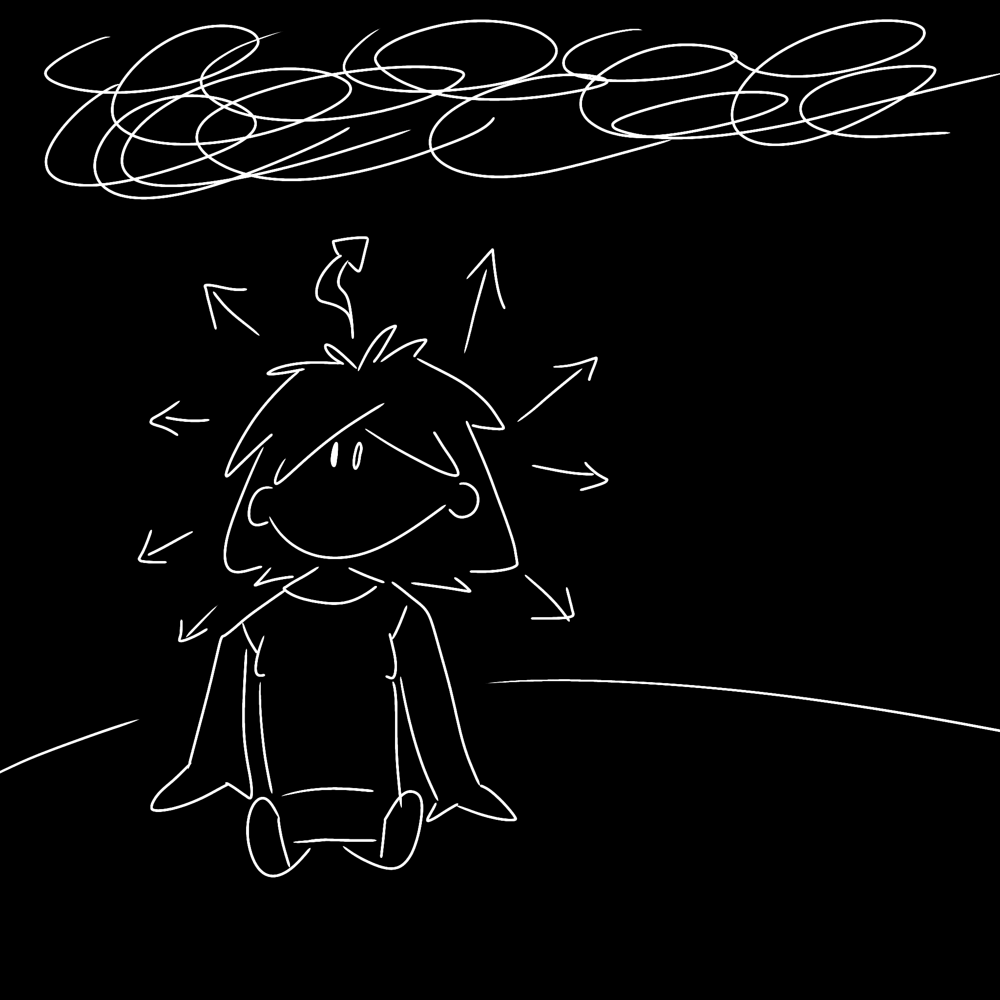
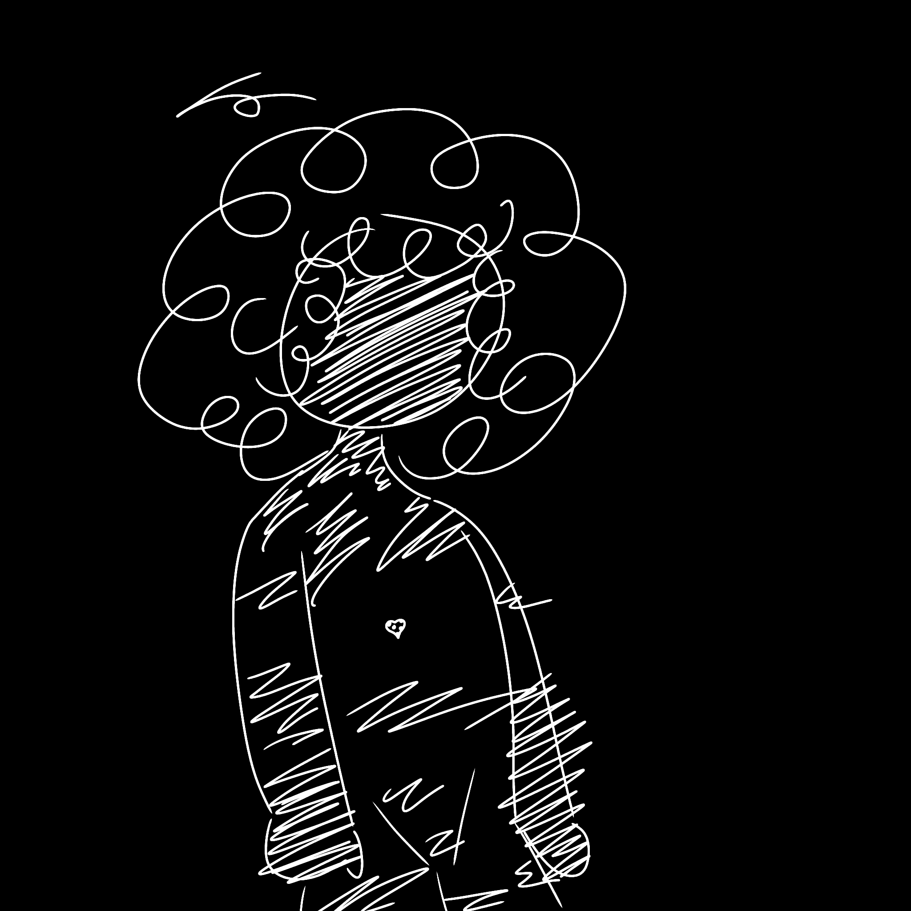
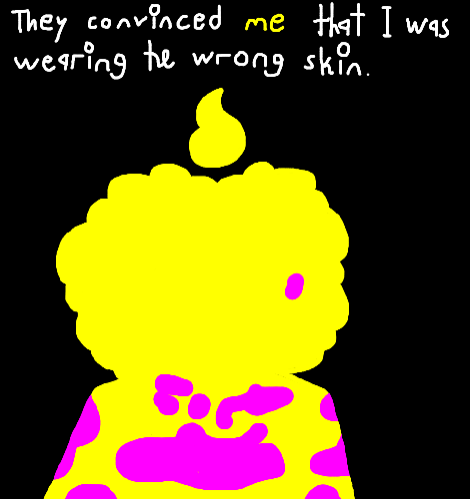
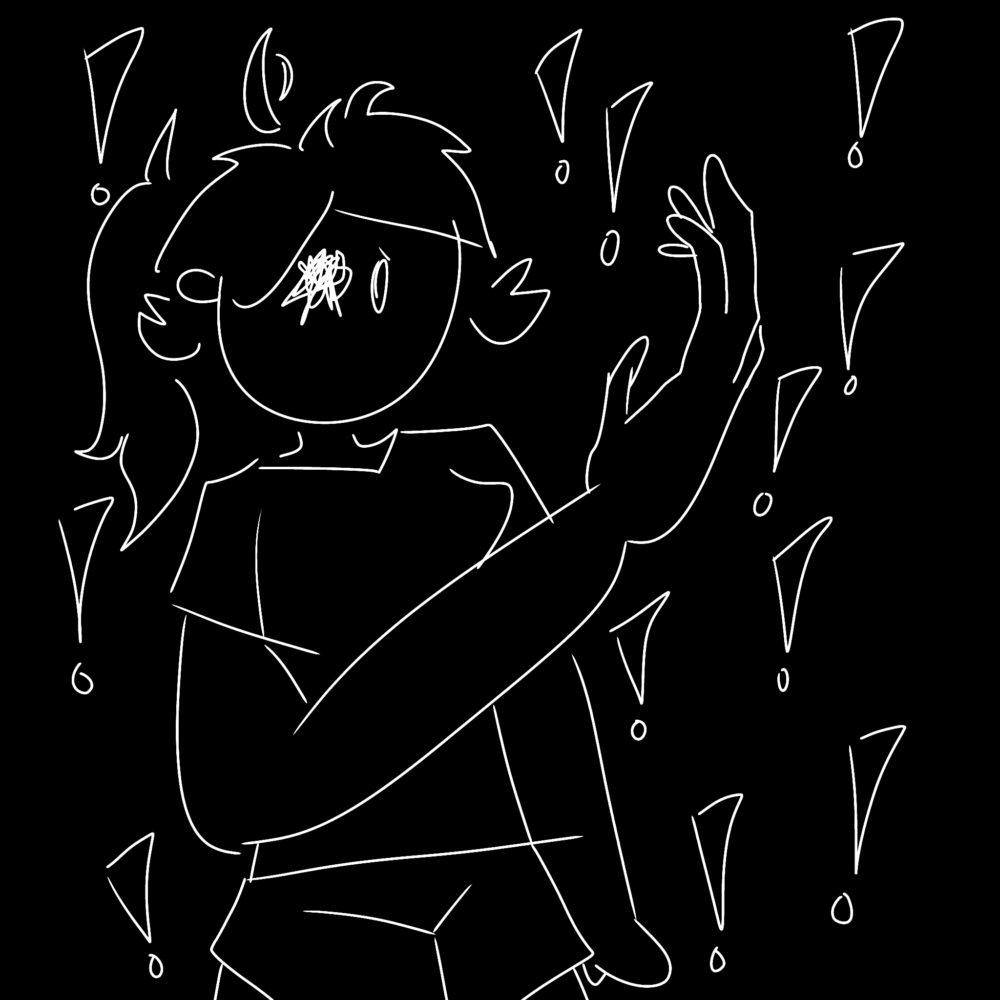

Kirby Golightly is one of the tritagonists of CO-WRITERS. Unlike all of the other characters in the story, Kirby was constructed by Nari while It had already derailed from the Smith & Satoh script. After being created and set out to a random house, Kirby eventually wandered off and ended up meeting with Kapi, who became concerned about Kirby and took her in as a roommate. Compared to literally everyone else, Kirby is the most obviously mentally healthy, only causing accidental harm and personal intrusions from pure curiosity and the desire for knowledge. Although she has a very "live in the present" mindset, she can't help but find herself wondering why she can't remember anything before September 27, 2025...
Kirby is far from airheaded, though. She is very socially aware and smart, she just has a hard time controlling herself when it comes to curiosity and knowledge. Something that comes back to bite her every now and then.


Cassidy Kapiecki (/kəˈpiːki/ kuh-PEE-kee), or simply Kapi, is one of the tritagonists of CO-WRITERS. Being the one character to get the most info-dumps out of anyone (as a way of getting my HIMSON habits out of my system), she was born with vitiligo, a disorder that causes the skin to lose its melanin, leaving her face, neck, and lower arms and legs almost completely white by a young age, with white patches remaining scattered across her upper arms, shoulders, chest, back, abdomen, and upper legs. Kapi is by far the most mentally challenged person in the story by far, suffering from past issues with bullying, mockery, isolation, rejection, and ongoing issues involving unhealthy anchoring, self-judgement, negative self-imagery, panic attacks, unwanted thoughts. When Kirby first meets her, Kapi is in a state of her life where she is, quite literally, pretending to be white, wearing long and oversized clothing to hide the areas unaffected by her vitiligo. However, after Kirby accidentally finds out and convinces her to come out about it to her best friend and coworker Vad, Kapi's story becomes one of letting other people help you with your problems. Something which Kapi was unable to do for most of her life due to sheltering herself from others. In an attempt to protect herself from harm, she only started hurting more.
Kapi is also the character I like projecting onto the most, for some reason. Like, not anything super personal, but Kapi is officially diagnosed with ADHD, so she really does give me a lot of freedom to put in some of my own experiences in there, like needing fidget toys for regulation, a constantly changing attention span depending on what she's doing, and small but harmless habits that she constantly does. She's really the only character that I let myself put as much as I want onto her, as even though I said I learned from HIMSON not to do that, it's still a burning desire in my heart to do it regardless. So Kapi lets me do that sometimes. Thanks, Kapi.

Emily Vaduva, or simply Vad, is one of the tritagonists of CO-WRITERS. Kapi's coworker, best friend, crush, and skating partner, she funnily mirrors Kapi in a lot of aspects. She had a rough childhood full of isolation, mockery, and rejection, this time through her mother, and her missing eye is a remnant of the past that will forever be a part of her and her character, much like Kapi's vitiligo. The difference between them is that Vad finds it much easier to let go of the past and not care about what anyone thinks. Like Kirby, she has a very obvious "live in the present" mindset, and she's a great person to go to when seeking advice regarding mental barriers. However, that also leads her to overthinking herself, by herself.
While yes, Vad is generally the more stable between her and Kapi, and I would classify her as "stable" (whereas I wouldn't with Kapi, sorry Kapi), she is not perfect. Far from it. She's a catastrophizer, she has anxiety and what can only be described as trauma from knowing her mere presence prevented Kapi from doing something, anger issues, violent automatic responses, her default coping mechanism is ignorance, she's scared by the fact that she has power over Kapi as her emotional anchor, and she's a bit lost when it comes to herself and hasn't figured herself out fully. Yes, she is "healthier" than Doll (who has numbed herself so much to the point of permanent stagnation), Oli (who puts herself through pain to help relieve others of theirs), and Kapi (who has a whole myriad of mental health issues), but she is NOT the healthiest character. That might go to Kirby, actually.
Vad is definitely the one character that I've yet to fully expand on. She has a lot of potential for really good scenes and themes, but I just haven't been focusing on her as much as I have been on Kapi, Doll, and the others. One day, Vad. One day.